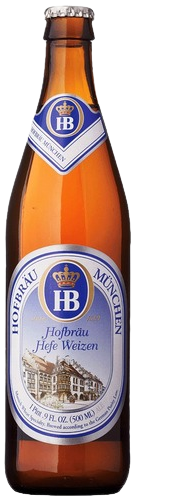

Wheat Beer
| Type | Notable Ingredients | Origin | Notable Brands / Beers | Taste / Aroma / Characteristics | Alcohol Cotent |
|---|---|---|---|---|---|
| Berlinner Weisse | Barley, Wheat, Kilned Malts | Germany | - | Tart, Sour | Moderate |
| Dunkelweizen | Wheat, Dark Munich Malt | Germany | Erdinger, Paulaner, Maisel's |
Grainy, Bready, Toasty | Moderate |
| Gose | Malted Wheat, Coriander, Salt | - | Germany | Lemon, Herbal, Saltiness | Moderate |
| Weizenbier (Hefe-Weizen) |
Wheat Malt | Germany |  Hofbrau, Paulaner, Maisel's |
Sweet, Fruity, Banana, Clove | Moderate |
| Witbier (White Beer) |
- | Belgium, The Netherlands |  Tennent's, McEwan's |
Sweet, Malty, Full body | Moderate |